1. 开始之前要准备的东西
- 一部 iPhone（这份教程用 iPhone 示范）
- 你的 Apple ID 密码（下载 App 时可能会用到）
- 手机可以正常上网（Wi-Fi 或移动网络都可以）
- 管理员发给你的“专属网址”，看起来像这样：
https://………/p/一长串英文和数字/
什么是“管理员”？就是帮大家架好家里网络的那个人。遇到不会的地方，直接问他就好。
2. 选一种方式
有两种 App 可以连回家里，选一种就好，不用两个都装。如果不知道选哪个，问管理员，他会告诉你。
🚀 方式 A：Shadowrocket
需要付费购买
- 最简单，按一个按钮就设置好
- 不用注册账号
- 适合：想用家里网络上网的人
看方式 A 的教程 →
🔵 方式 B：Tailscale
免费
- 要用 Google 或 Apple 账号登录
- 管理员要先发邀请给你
- 适合：需要用到家里电脑的人
看方式 B 的教程 →
⚠️ 两个不能同时开iPhone 一次只能开一个 VPN。开了 Shadowrocket，Tailscale 就会自动关掉，反过来也一样。
3. 打开“我的专属网页”
不管选哪一种方式，都会用到这个网页。它会告诉你：你可以用什么、能用到什么时候，也可以在这里使用云盘。
1
点开管理员给你的网址
在 LINE 或信息里直接点那个网址，iPhone 会用 Safari 打开。
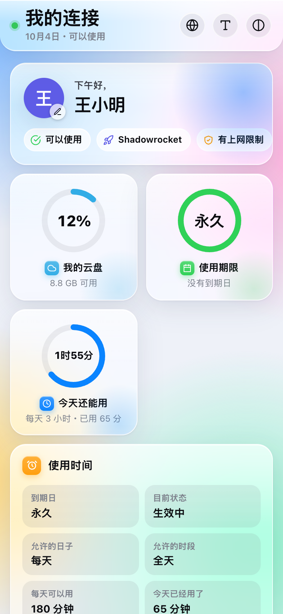
打开后会看到你的名字（图中“王小明”是示例）
看到绿色的“可以使用”就代表一切正常。如果是红色，请看最下面的
常见问题。
字太小看不清楚？按右上角的
T 就会变成大字，再按一次变回来。详细请看
大字模式。
2
把它放到主屏幕（以后一点就开）
- 按 Safari 最下面中间的 共享 按钮（一个方框加向上的箭头 ⬆︎）
- 往下滑，按 添加到主屏幕
- 右上角按 添加
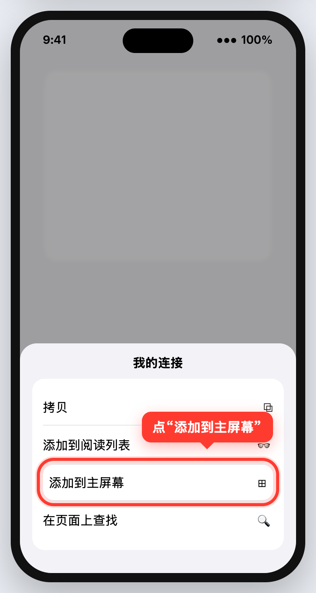
主屏幕会多一个“我的连接”图标
4. 方式 A：Shadowrocket 付费
1
下载 Shadowrocket
- 打开 iPhone 上的 App Store（蓝色的 A 字图标）
- 按右下角 搜索，输入 Shadowrocket
- 找到一个蓝色火箭图标的 App，按价格按钮购买
- 用 Face ID 或 Apple ID 密码确认付款
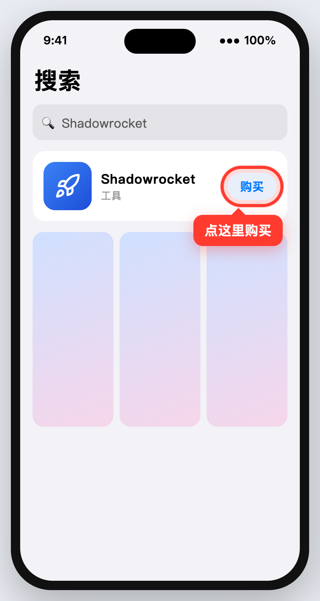
示意图：实际价格和图标以 App Store 为准
搜索不到？中国大陆的 App Store 没有这个 App。如果找不到，请找管理员帮忙。
2
从“我的专属网页”一键导入
- 打开我的专属网页，往下滑到 Shadowrocket 那一块
- 按蓝色的 用 Shadowrocket 打开
- 弹出“要在 Shadowrocket 中打开吗？”，按 打开
示例・不能扫
你的网页上会有你自己的 QR 码和按钮
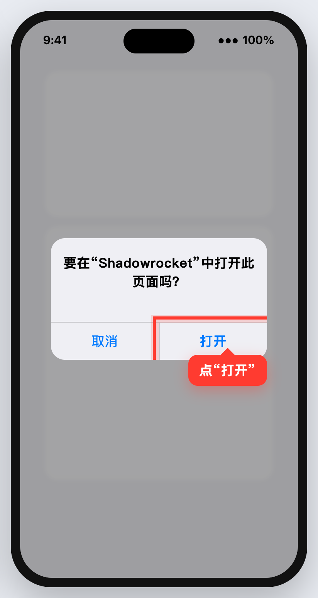
用别的手机扫也可以如果网页是在电脑上打开的，可以在 Shadowrocket 首页按左上角的“扫描”图标，扫网页上的 QR 码。
3
第一次使用：允许 VPN
第一次打开开关时，iPhone 会问你要不要添加 VPN 配置，按 允许，再输入 iPhone 的锁屏密码或用 Face ID。
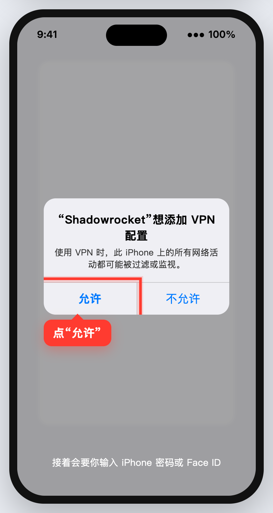
这一步只会出现一次
4
打开开关
- 确认下面的列表里，“家里的 Mac”前面有打勾 ✓
- “全局路由”选 代理
- 打开最上面的开关（变成绿色）
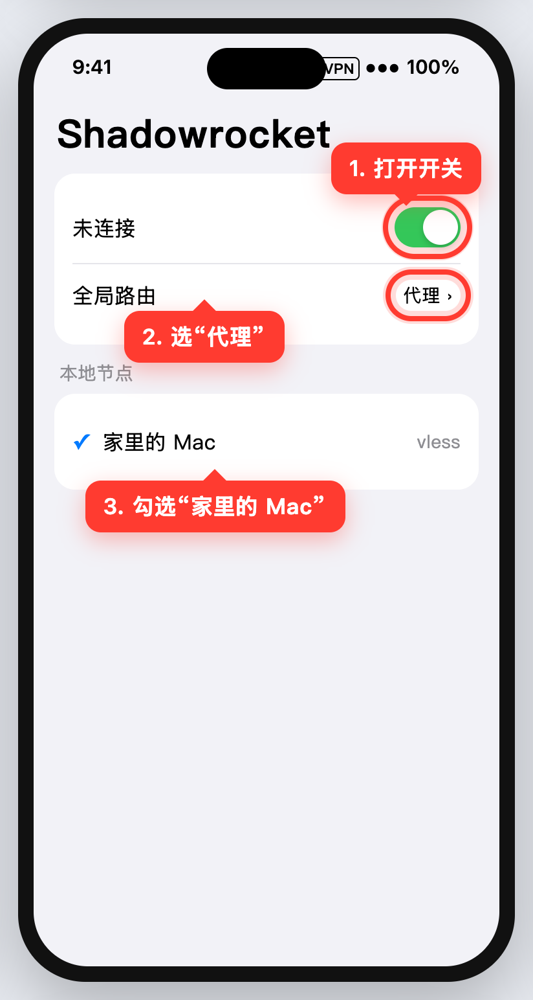
成功的样子：iPhone 最上面会出现一个小小的 VPN 字样。
5
检查有没有成功
用 Safari 打开 api.ipify.org，画面上会出现一串数字。这串数字和管理员告诉你的一样，就代表成功了！
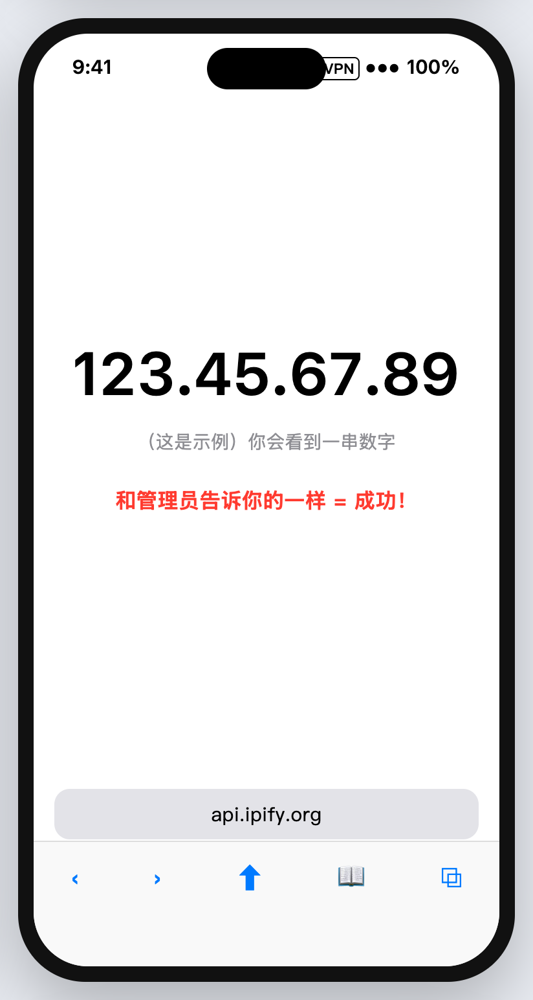
图中的数字是示例
6
平常怎么用？
- 要用的时候：打开 Shadowrocket，把开关打开
- 不用的时候：把开关关掉就好（比较省电）
- 也可以到 iPhone 的 设置 → VPN 开关
5. 方式 B：Tailscale 免费
先确认：管理员已经邀请你了吗？管理员会用 Email 或 LINE 发一个“邀请链接”给你。没有邀请的话，登录后什么都连不到。
1
下载 Tailscale
- 打开 App Store，搜索 Tailscale
- 按 获取（免费），再用 Face ID 或密码确认
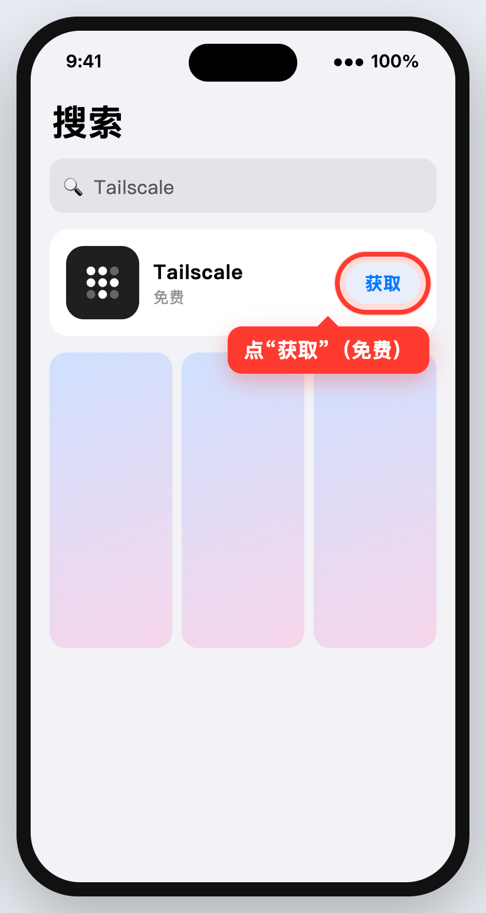
示意图：实际图标以 App Store 为准
2
接受邀请并登录
- 点管理员发给你的邀请链接，按“接受”
- 打开 Tailscale App，按 登录
- 选你平常用的账号（Google 或 Apple）登录
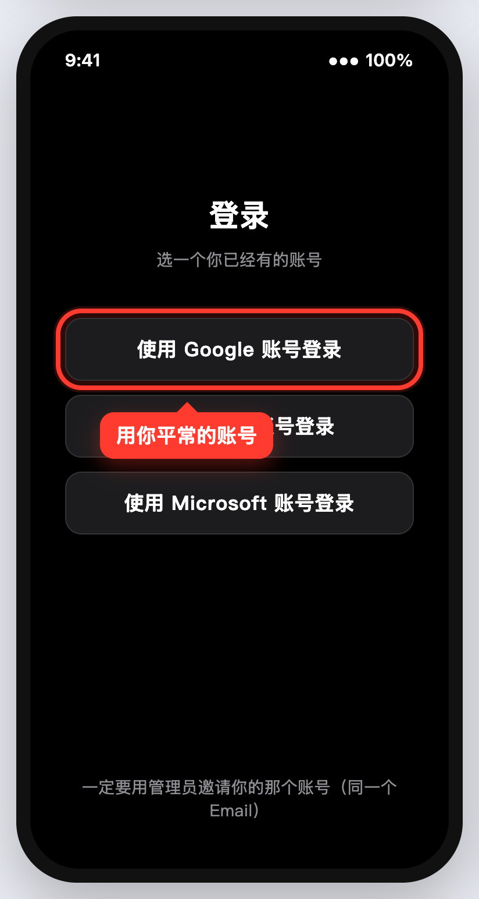
示意图：实际画面可能是英文
一定要用同一个账号要用管理员邀请的那个 Email 登录，不然会连不到。
3
允许 VPN
和 Shadowrocket 一样，第一次会问你要不要添加 VPN 配置（名称会是 Tailscale），按 允许，再输入 iPhone 密码或 Face ID。
4
打开连接，选“家里的电脑”
- 把最上面的开关打开（变成绿色）
- 点 Exit Node
- 选 家里的电脑（实际名字请问管理员）
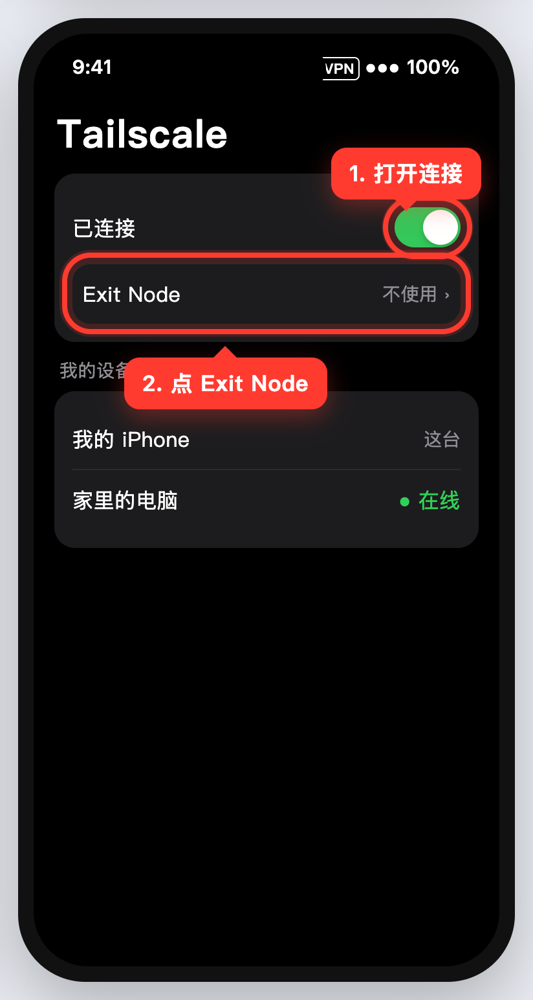
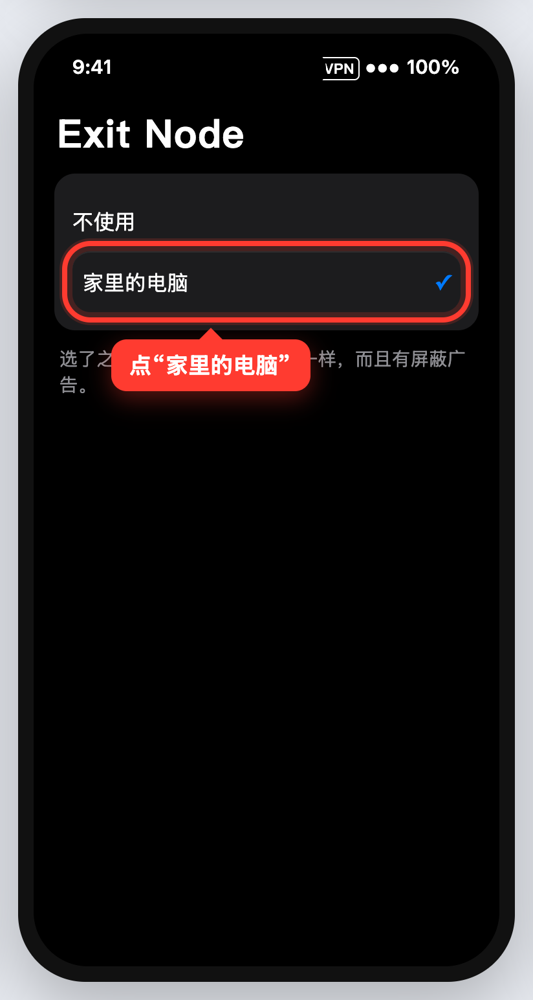
选了之后，你上网就像在家里一样，还会自动屏蔽广告
没有看到 Exit Node？代表管理员没有开放这个功能给你，这是正常的。
6. 使用“我的云盘”存照片和文件
如果管理员帮你开了云盘，我的专属网页上会有 “我的云盘”。你可以把照片、视频、文档存在家里的硬盘，换手机也不怕丢。
1
认识两个文件夹
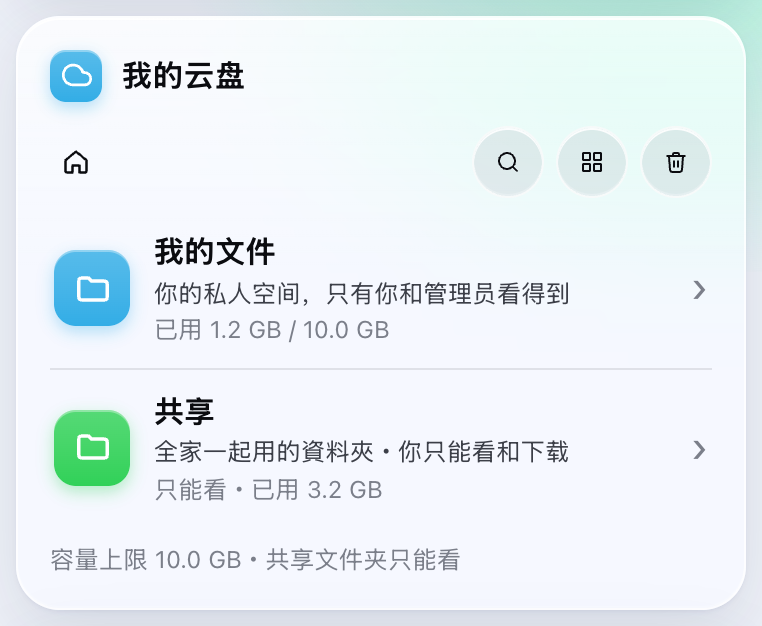
- 我的文件：你自己的空间，只有你和管理员看得到。下面会写你已经用了多少、最多能放多少。
- 共享：全家一起用的文件夹。你能不能放东西进去，由管理员决定。
2
上传照片或视频
- 点 我的文件 进去
- 按蓝色的 上传
- 选 照片图库，勾选要上传的照片或视频，按 添加
- 等进度条跑完，就会出现“已上传”。进度条下面会写速度和还要多久
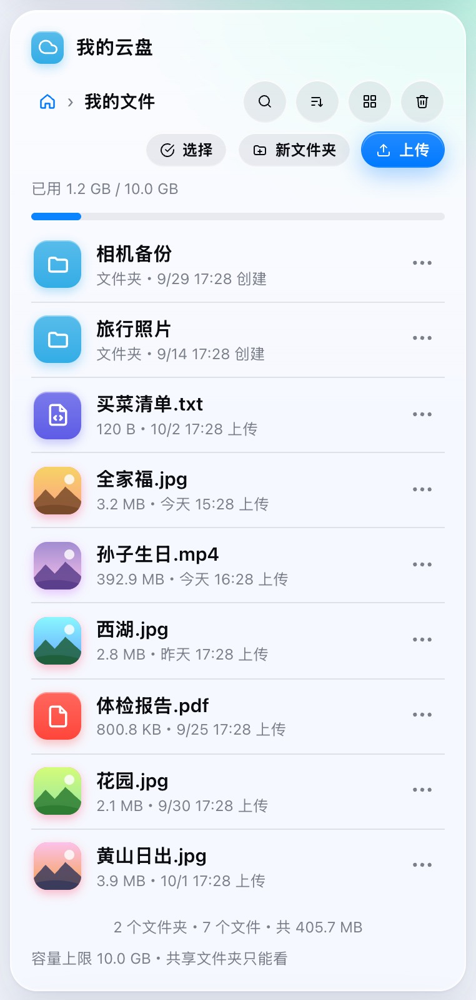
每个文件下面会写大小和什么时候上传的，最下面有总共几个文件、占多少空间
上传时不要关掉网页视频比较大，要等久一点。上传到一半离开网页，就要重新上传。想要每天自动备份，请看
第 7 步。
3
上面那排小按钮是做什么的
- 🔍 搜索：输入文件名的一部分，例如“生日”，就会找出所有文件夹里有“生日”的文件
- ↕️ 排序：可以按 名称、上传时间、修改时间、大小、类型 排。想看最新上传的，就选“上传时间”
- ▦ 切换显示方式：在“列表”和“相册”之间切换。相册模式会把照片排成格子，像手机的照片 App
- 🗑 回收站：删掉的东西会先放在这里（看第 6 个步骤）
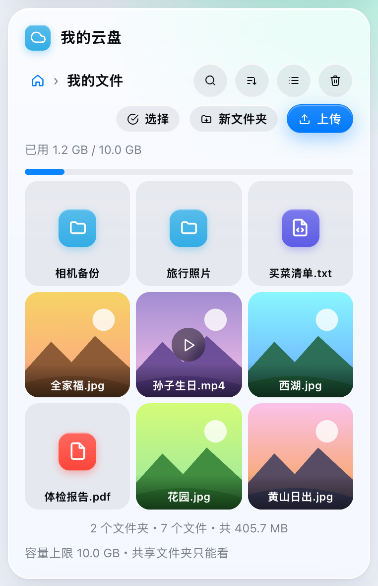
相册模式：照片、视频、PDF 都看得到缩略图
4
点一下就能直接看
不用下载，点一下就能在手机上打开：
- 照片、视频、音乐：直接看、直接播。往左、往右滑可以看上一张、下一张
- PDF、Word、Excel、PowerPoint、Pages、Keynote：会显示第一页的样子。PDF 按 打开 PDF 可以看全部；Word 文件可以按 看文字 看全文
- 文字文件（.txt）、表格（.csv）：直接显示内容，CSV 会排成表格
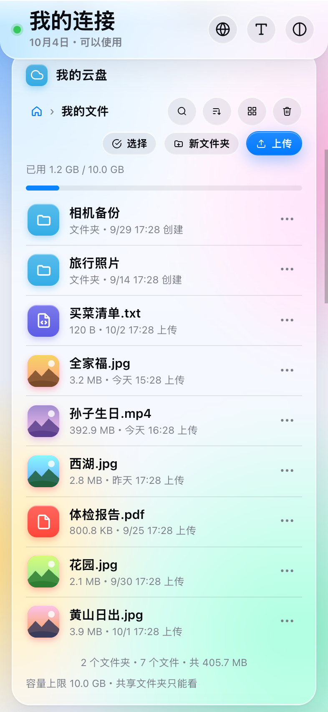
文字文件直接显示内容
5
按 ⋯ 可以做更多事
每个文件右边都有 ⋯，按下去会看到：
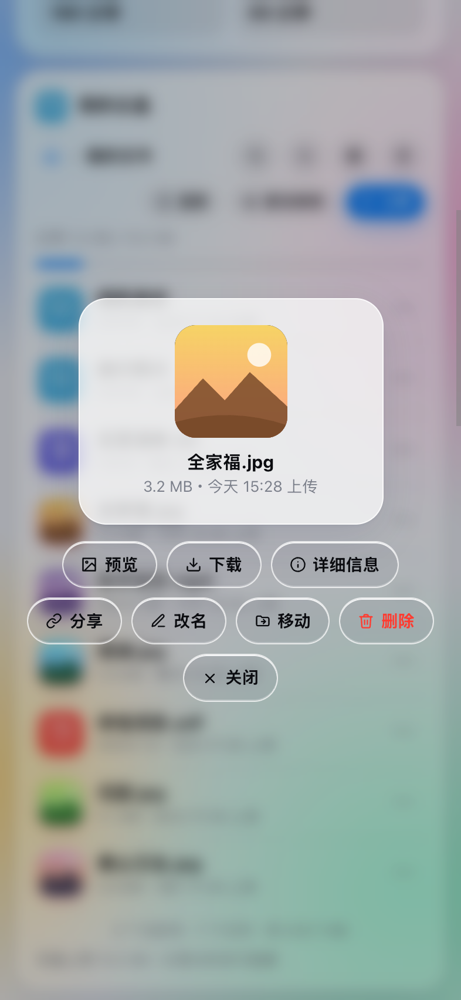
- 下载：存到手机里。如果是文件夹，会变成 下载 ZIP，整个文件夹一次下载
- 详细信息：看文件多大、什么时候上传、照片多少万像素、视频多长
- 分享：生成一个链接发给朋友（看下面“分享给别人”）
- 改名、移动（搬到别的文件夹）、删除
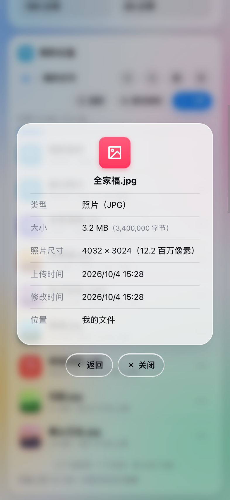
详细信息
6
一次整理很多个文件
- 按 选择
- 点要整理的文件，前面会出现蓝色的勾 ✓（按 全选 可以一次全部勾）
- 按 移动 搬到别的文件夹，或按 删除
- 做完按 完成
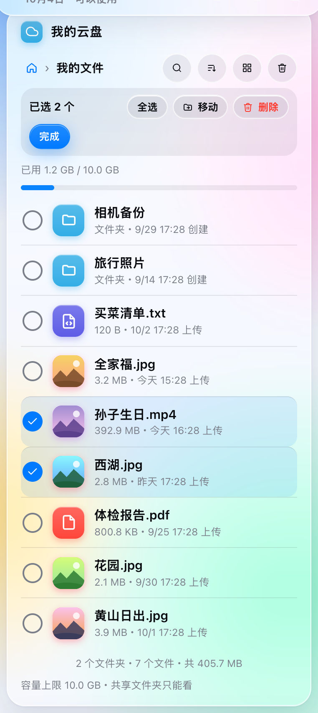
移动时会弹出文件夹列表：点文件夹进去，到了想放的地方，按 移到这里。
7
不小心删掉了？到回收站救回来
删掉的文件不会马上消失，会在回收站放 30 天，之后才自动清掉。
- 按上面那排的 🗑 回收站
- 找到要救的文件，按 还原，它就会回到原本的文件夹
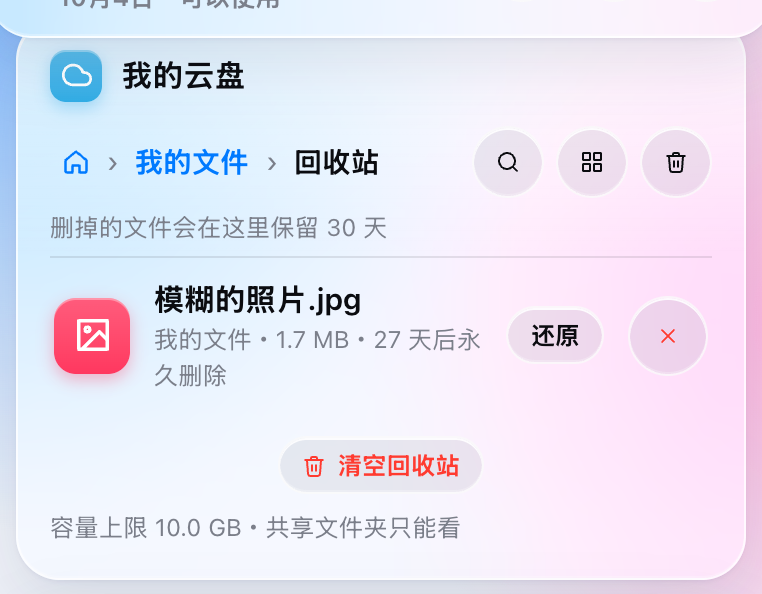
回收站里按 ✕ 或“清空回收站”就真的救不回来了按下去还要再按一次确认，请看清楚再按。
8
分享给别人（对方不用装 App）
- 在文件或文件夹按 ⋯ → 分享
- 选 有效期限（1 天、7 天、30 天、永久）
- 可以限制 最多下载几次，也可以设 密码
- 按 创建链接，链接会自动复制好，粘贴到 LINE 发给对方就可以了
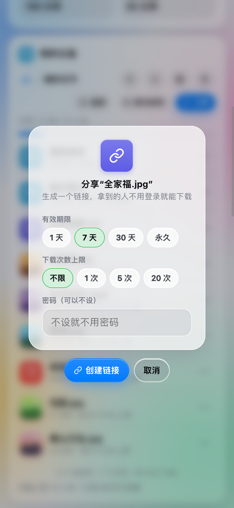
对方打开会看到什么？一个只能看和下载的网页，看不到你其他的文件。分享文件夹的话，对方可以按“全部下载（ZIP）”。时间到、次数用完，或管理员取消，链接就会失效。
有设密码的话，密码要另外告诉对方不要把密码和链接贴在同一条消息里。
7. iPhone 照片每天自动备份
用 iPhone 内置的“快捷指令”App，每天晚上自动把当天拍的照片存到你云盘的“相机备份”文件夹。不用另外下载 App，也不用开 VPN，只要有网络就会备份。
1
先复制你的上传网址
在我的专属网页找到 “iPhone 照片自动备份”，按 复制上传网址。
网页上找不到这一块？代表管理员没有开放你使用自动备份（在网页上手动上传照片还是可以）。需要的话可以
留言请管理员打开。
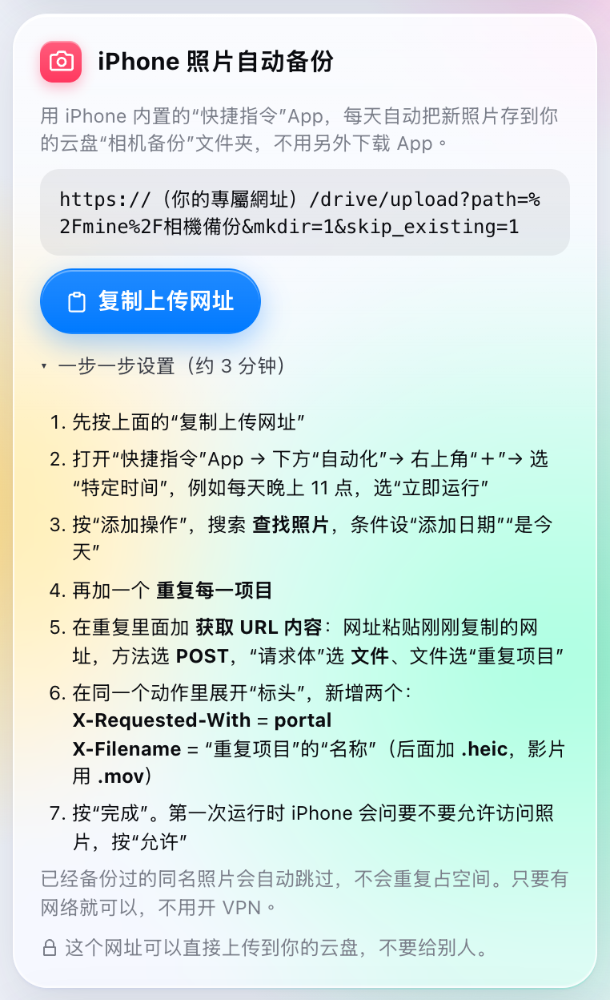
网页上也有同样的步骤可以照着做
2
在“快捷指令”App 新增自动化
- 打开 快捷指令 App（找不到的话，在主屏幕往下滑搜索“快捷指令”）
- 按下面的 自动化，再按右上角 ＋
- 选 特定时间，设成每天晚上 11:00，选 立即运行，按 下一步
3
加入三个操作
- 按 添加操作，搜索 查找照片，加入。按“添加过滤条件”，设成 添加日期・是今天
- 再搜索 对每个项目重复，加入
- 在“重复”里面，加入 获取 URL 内容：
- 网址：粘贴刚刚复制的网址
- 按“显示更多”，方法选 POST
- 请求体选 文件，文件选 重复项目
- 头部按“添加新头部”两次：
第一个：名称 X-Requested-With，值 portal
第二个：名称 X-Filename，值选 重复项目 的 名称，后面打上 .heic
（如果“设置 → 相机 → 格式”选的是“兼容性最佳”，就改打 .jpg）
4
试运行一次
按右下角的 ▶︎ 试运行。第一次 iPhone 会问“允许访问照片吗？”，按 允许。跑完到“我的云盘 → 我的文件 → 相机备份”看看，今天的照片应该都在了。
重复运行也没关系已经备份过的同一张照片会自动跳过，不会占两份空间。
容量满了就会停“我的文件”满了以后就存不进去。可以在云盘删掉旧照片，或用
留言请管理员加大容量。
8. 其他好用的功能
1
大字模式（给长辈用）
按专属网页右上角的 T，整个网页的字和按钮都会变大。这部手机会记住，下次打开还是大字。再按一次 T 就变回原本的大小。
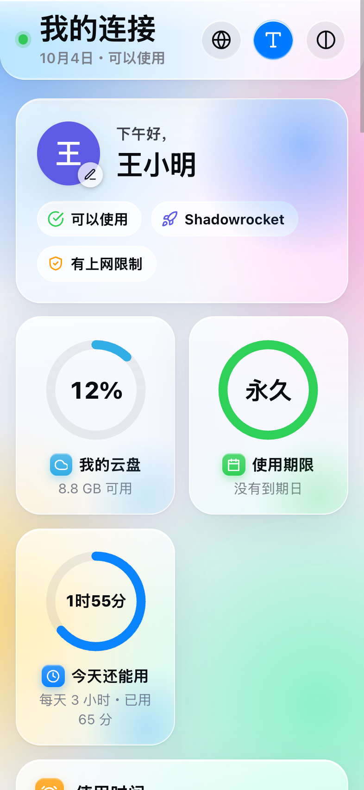
开启后 T 会变成蓝色
2
今天还能用多久
如果管理员帮你设了每天可以用多久，网页上会多一个蓝色圆圈“今天还能用”，写着还剩几分钟。
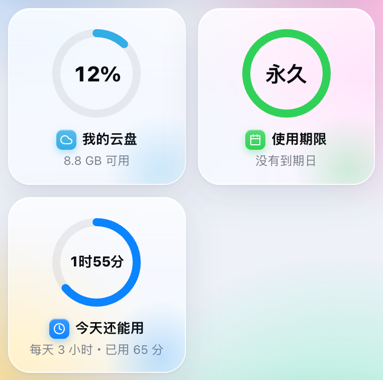
- 只有真的在用网络的时候才算时间，开着不用不会扣
- 时间用完，当天就连不上，半夜 12 点自动恢复
- 不够用的话，可以留言请管理员加
3
留言给管理员
想延长使用期限、加大云盘容量、增加每天的时数，或是遇到问题，都可以直接在网页上留言：
- 在“留言给管理员”选一个项目，例如 加大云盘容量
- 想补充的话写在下面的框框（可以不写）
- 按 发送
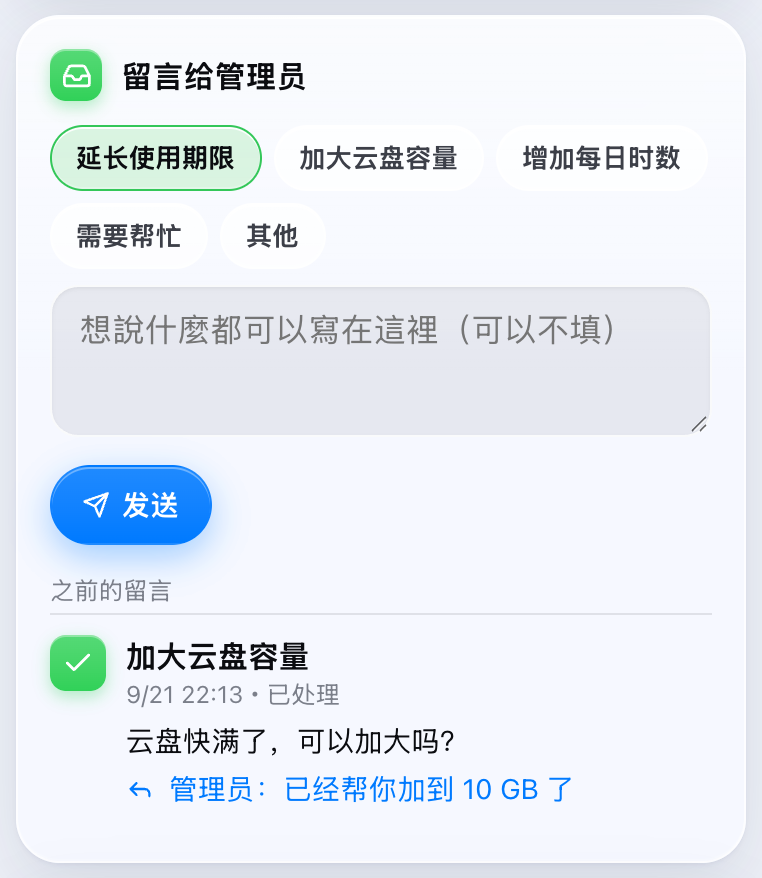
管理员的手机会马上收到通知。他回复以后，会显示在“之前的留言”下面，绿色勾代表已经处理好了。
4
网速测试
觉得很慢的时候，到网页最下面的“连接检查”，按 网速测试 旁边的 开始，大约 10 秒就会显示下载和上传的速度。
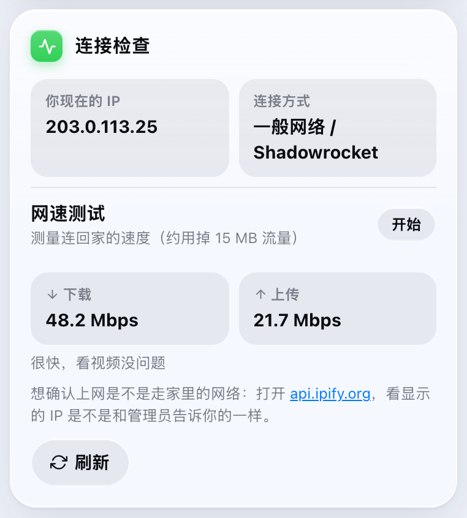
- 20 Mbps 以上：很快，看视频没问题
- 5～20 Mbps：一般使用没问题
- 5 Mbps 以下：比较慢，可以换个地方或换 Wi-Fi 试试
每测一次大约用掉 15 MB 的流量，用移动网络的话不要一直测。
9. 看家里 Mac 的状况 有控制台权限的人
家里的网络、云盘都是靠一台 Mac 在运行。如果管理员有开“控制台”给你，就可以看到这台 Mac 现在忙不忙、热不热、电池好不好。这一页只能看，不会改到任何设置，放心看。
1
打开“Mac”页面
- 打开控制台（要先开 Tailscale）
- 按下面的 设置，再按上面的 Mac
或是在控制台首页，直接点 CPU 或 内存 那两个圆圈，也会跳到这一页。
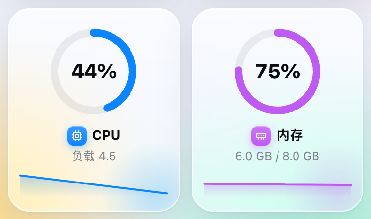
首页点这两个圆圈就能看详细
2
最上面：一眼看懂现在的状况
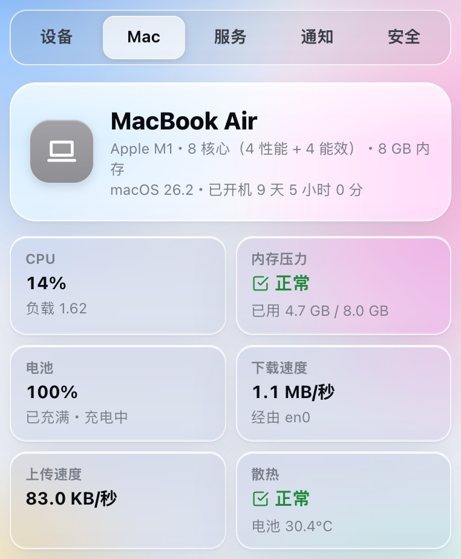
- CPU：电脑现在有多忙。平常 20% 以下，偶尔冲高没关系
- 内存压力：绿色“正常”就好；橙色“偏高”代表程序开太多，电脑会变慢
- 下载／上传速度：家里这台 Mac 现在正在传多少数据
- 散热：绿色“正常”；如果出现红色“过热降速”，代表太热了，电脑会自己放慢
这一页每 5 秒会自己更新，不用一直刷新。
3
趋势图：看过去 24 小时
可以选看最近 1 小时、6 小时 或 24 小时。用手指点一下图，就会显示那个时间的数字；点图以外的地方就收起来。
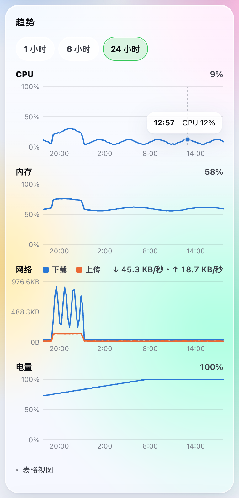
点图上任何一点，就会看到那个时间的数值
不习惯看图的话，按最下面的 表格视图，会用表格列出每个时间的数字。
4
电池
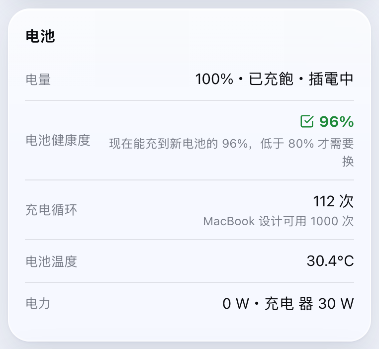
- 电池健康度：电池现在能充到新电池的百分之几。80% 以上都很正常，低于 80% 才需要考虑换电池
- 充电循环：电池用了几轮。MacBook 设计可以用 1000 次
- 电池温度：30 几度很正常；超过 40 度会变橙色提醒
5
内存：为什么电脑变慢
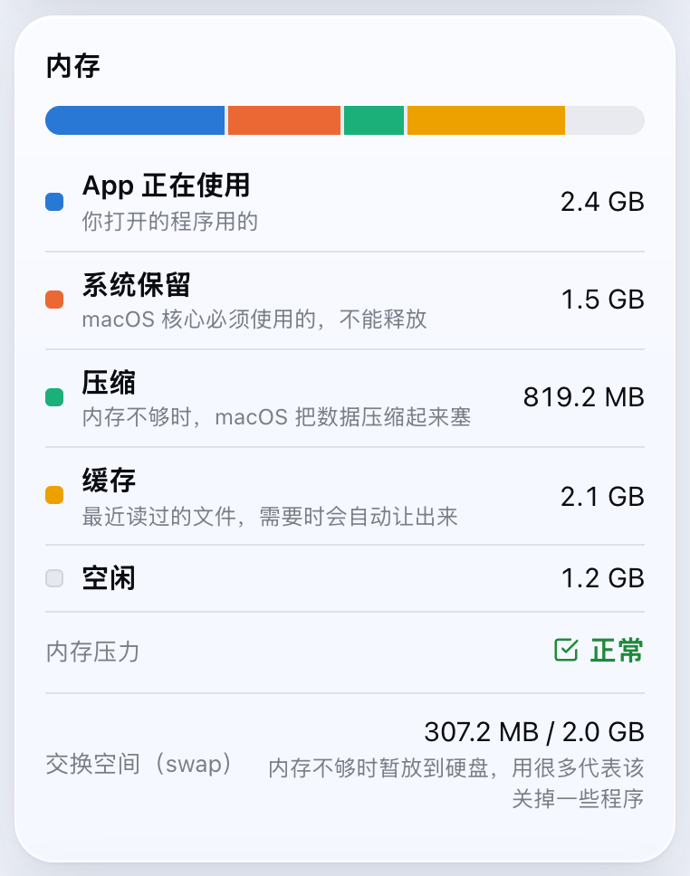
- 长条分成几种颜色，每一种旁边都有说明和用量
- 缓存不用担心，需要时会自动让出来
- 压缩和交换空间（swap）很多，代表内存不够，电脑会变慢、变热
6
最耗资源的程序
可以切换 按 CPU 或 按内存 排序。同一个程序开了很多个（例如浏览器的每个标签页），会合并成一行，后面标 ×数量。
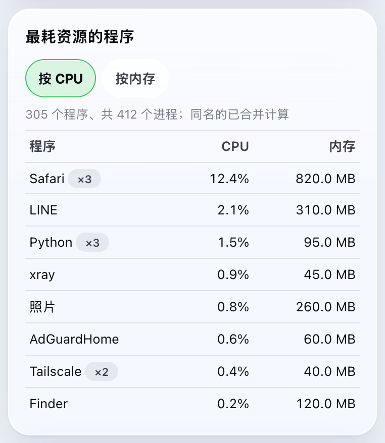
觉得家里网络或云盘变慢？先看这一页：如果“内存压力”是橙色，或某个程序占很多，告诉管理员，请他关掉一些程序或重启一次。
10. 用手机遥控 Windows 电脑 管理员
家里有 Windows 电脑的话，可以像遥控 Mac 一样，用手机控制它：看它在不在用、切歌、调音量、弹通知给正在用电脑的人、锁定、关机。只有管理员（控制台拥有者）看得到这个功能。
1
Windows 先装好 Tailscale
- 在 Windows 上到 tailscale.com/download 下载安装
- 登录跟你手机一样的账号（很重要，不同账号会连不上）
- 右下角的 Tailscale 图标要是已连接
2
在手机生成安装命令
- 打开控制台，按下面的 遥控
- 按最上面的 ＋ Windows，再按 生成安装命令
- 按 复制命令，用 LINE 或 email 发到 Windows 电脑上
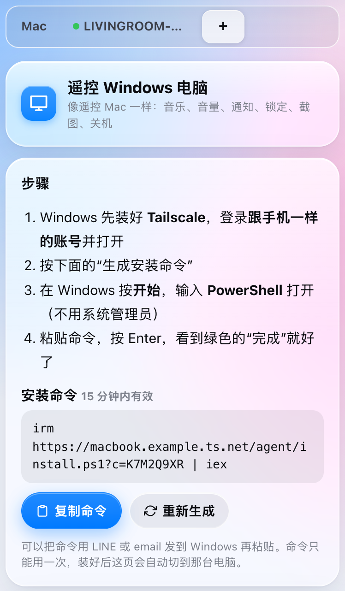
命令只能用一次，15 分钟内有效；过期就按“重新生成”
3
在 Windows 粘贴命令
- 按键盘的 ⊞ Windows 键（或左下角的开始），输入 PowerShell，按 Enter 打开
- 在蓝色或黑色的窗口里按右键（或 Ctrl+V）粘贴命令，按 Enter
- 看到绿色的 “完成！” 就好了，可以把窗口关掉
不用系统管理员权限，也不用改防火墙。之后每次开机登录都会自动在后台运行，不会弹出任何窗口。
装好之后，手机上的页面会自动切到这台电脑。电脑名称太长的话，可以在最下面的“管理”改成好认的名字，例如“客厅电脑”。
4
看状态、控制音乐
上面的按钮可以在 Mac 和每一台 Windows 之间切换。名字旁边是绿点代表电脑开着、连得到。
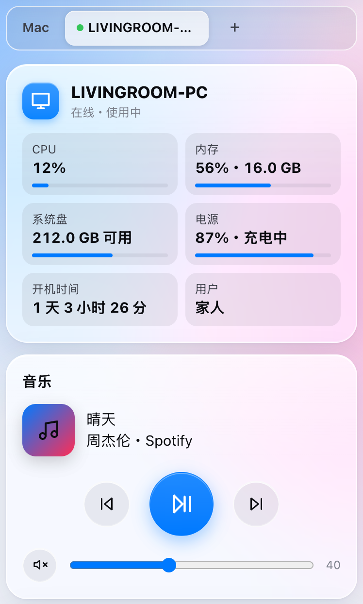
- 在线・使用中／闲置／已锁定：可以知道现在有没有人在用这台电脑
- 音乐：Spotify、浏览器里的 YouTube 等都看得到正在播什么，可以暂停、切歌、拉音量
5
屏幕和电源
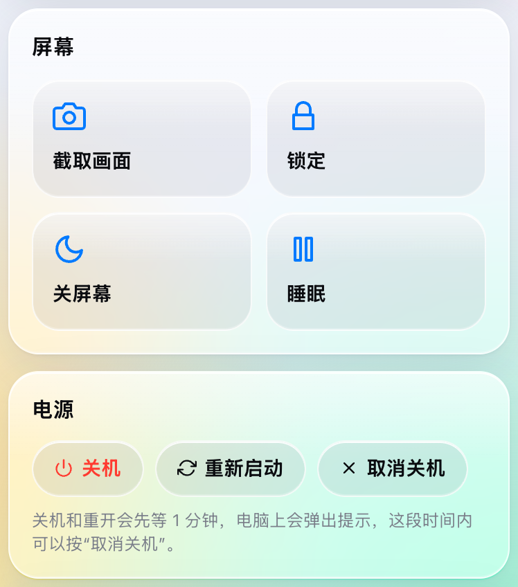
- 截取画面：看电脑现在的画面（电脑锁定时看不到）
- 睡眠、关机、重新启动要连按两下才会执行，避免不小心按到
- 关机和重启会先等 1 分钟，电脑上会弹出提示；后悔了就按 取消关机
再往下还有：弹出通知和朗读（例如“吃饭了！”）、剪贴板同步（手机和电脑互传文字）、在电脑上打开网址。
6
不想用了：移除
在那台电脑的页面最下面按 移除这台电脑（要按两下）。电脑开着的话，上面的程序会自己删掉；电脑关着的话，下次开机连接时会自动删掉。
安全说明只有你的控制台能遥控，而且只通过 Tailscale；电脑上的程序只会做这一页列出的事，不能运行其他程序。每次有新电脑加入，你的手机都会收到通知，不是你加的就马上移除。
11. 反馈问题给管理员
网页打不开、云盘上传失败、连不上网…遇到奇怪的地方，直接在你的专属网页告诉管理员。不用打字解释很多，选一选、拍张截图就可以。
1
找到“反馈问题”
打开你的专属网页，往下滑，找到橙色的 “反馈问题”，按 我要反馈问题。
下面的“我的反馈”会显示处理进度和管理员的回复
2
填一下就好
- 哪里有问题？：选云盘、上网／连接、专属网页…
- 有多严重？：小问题、有点影响，还是完全不能用
- 用一句话说发生什么事：例如“上传视频到一半就失败”
- 详细说明：可以不写；有写会更快找到原因
- 截图：按 选择截图，从相册选，最多 3 张
- 按 提交反馈，管理员的手机会马上收到通知
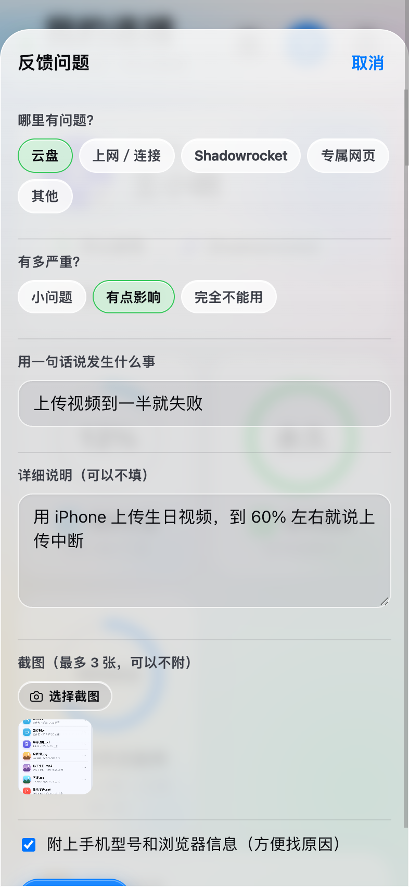
怎么截图？iPhone 同时按“侧边按钮”和“调高音量”，画面闪一下就截好了，会存在“照片”里。
“附上手机型号和浏览器信息”建议保持勾选，管理员比较容易找到原因。不会发送你的照片、通讯录或位置。
3
看管理员的回复
- 管理员回复时，标题旁边会出现红点 🔴
- 右边的标签会显示进度：新反馈 → 处理中 → 已修复
- 想补充说明，在下面的框框打字再按 发送
- 标成“已修复”但还是有问题？点“还是有问题？”告诉管理员，反馈会重新回到他的待处理列表
很急吗？例如完全连不上网、云盘打不开，选“完全不能用”，管理员会收到紧急通知。真的很急也可以直接打电话给他。
12. 遇到问题怎么办
遥控 Windows：粘贴命令后出现红字“安装失败”
- 确认 Windows 右下角的 Tailscale 是已连接，而且登录的是跟手机一样的账号。
- 命令只能用一次、15 分钟内有效：回手机按 重新生成，用新的命令再粘贴一次。
- 要在 PowerShell 里粘贴，不是“命令提示符（cmd）”。
遥控 Windows：电脑一直显示“离线”，按钮都是灰的
电脑可能关机、睡眠，或没开 Tailscale。把电脑唤醒、确认 Tailscale 已连接，大约 30 秒内就会变回绿点。还是不行，可以在电脑上注销再登录一次（遥控程序会在登录时自动启动）。
开了之后上不了网
- 先把 Shadowrocket（或 Tailscale）的开关关掉再打开。
- 还是不行，就先把开关关掉，手机就会恢复正常上网。
- 用反馈问题告诉管理员（选“完全不能用”）：可能家里的电脑关机了或网络断了。
专属网页上写“权限目前无效”或红色字
- 不在允许时段：管理员设置了可以使用的时间，时间到了就能用。
- 已过期：使用期限到了，请问管理员要不要延长。
- 已停用：管理员暂时关掉了，请问管理员。
写“今日时数已用完”
你今天可以用的时间用完了，
半夜 12 点会自动恢复。急着要用的话，可以
留言请管理员帮你加时数。
专属网页打开写“找不到页面”或“网址已失效”
管理员可能帮你换了新的网址（例如为了安全）。请管理员发新的网址给你，旧的就不要再用了。
Shadowrocket 里“家里的 Mac”旁边有红点
有些 App 或网站打不开
管理员可能帮你设了“上网限制”（例如屏蔽广告、屏蔽某些 App）。在专属网页的 上网限制 那一块可以看到被挡的项目。有需要请问管理员。
上传失败，写“超过你的容量上限”
你的“我的文件”已经满了。可以删掉一些不要的文件，或请管理员帮你加大容量。
照片自动备份没有运行
- 快捷指令显示“管理员没有开放你使用照片自动备份”：请管理员在控制台帮你打开。
- 打开“快捷指令”App →“自动化”，确认那个自动化有打开，而且选的是“立即运行”。
- 手动按一次 ▶︎ 试运行，看有没有出现错误信息。
- 写“forbidden”：检查两个“头部”的名称有没有打错（大小写也要一样）。
- 写“超过你的容量上限”：云盘满了，请删掉旧文件或请管理员加大容量。
朋友说分享链接打不开
链接可能已经过期、下载次数用完，或是被取消了。重新分享一次，生成新的链接发给他就好。
照片在云盘里看起来是灰色的、没有缩略图
第一次打开时，家里的电脑要花几秒做缩略图，等一下再刷新就会出现。点开照片一样可以看。
控制台里找不到“Mac”那一页
“Mac”页面只有管理员有开“控制台”权限的人才看得到。需要的话请问管理员。
换了新手机怎么办？
在新手机上重新做一次：下载 App → 打开专属网址 → 按“用 Shadowrocket 打开”（或用 Tailscale 登录）。云盘里的文件都还在，不会丢。
可以同时开 Shadowrocket 和 Tailscale 吗？
不行，iPhone 一次只能开一个。要用哪个就开哪个。
13. 安全小提醒
🔒 你的专属网址和 QR 码就像钥匙拿到的人就能用你的身份连进家里、看你的云盘。
- 不要把专属网址发给别人，也不要贴到群组
- 不要把 Shadowrocket 的 QR 码截图分享
- 如果不小心发出去了，马上告诉管理员，他可以帮你换新的，旧的会立刻失效
- 不要把“照片自动备份”的上传网址给别人，拿到的人可以把文件传到你的云盘
- 分享链接发出去以后，拿到链接的人都能下载。重要的文件记得设密码、设期限
- 有人自称是管理员跟你要密码或验证码，先打电话跟本人确认